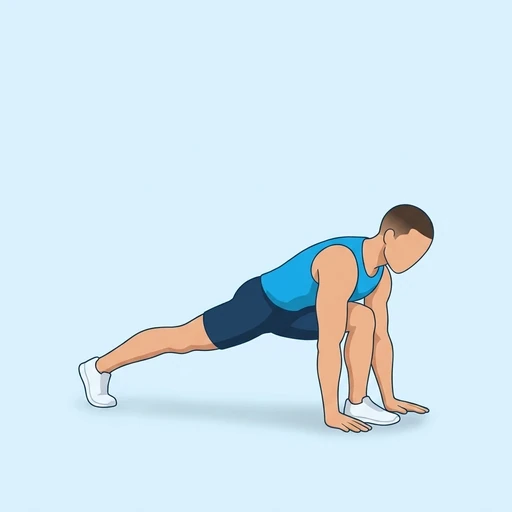
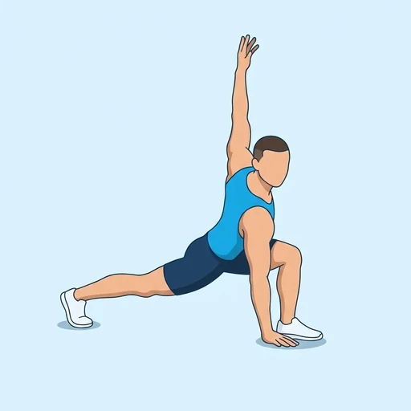

World's Greatest Stretch
A flowing mobility drill that combines a deep lunge with a trunk rotation. From a low lunge with both hands on the floor, you turn your chest toward the front leg and reach one arm to the ceiling, opening the hips, the upper back and the shoulder in one movement.
Full body · Bodyweight · Beginner


Muscles worked by the World's Greatest Stretch
Primary
Secondary
Also called: hamstring, hamstrings, posterior thigh, biceps femoris, hip flexor, iliopsoas.
Equipment
No equipment — this is a bodyweight exercise.
How to do the World's Greatest Stretch
- Start in a push-up position with your hands under your shoulders and your body in a straight line.
- Step one foot forward, outside the same-side hand, into a deep lunge and keep the back leg straight.
- Keep the hand on the back-leg side planted under your shoulder and sink your hips toward the floor.
- Rotate your chest toward the front leg, lifting the arm on that side up until it points at the ceiling, and follow your hand with your eyes.
- Hold the open position for a breath, then lower your hand back to the floor.
- Step back to the push-up position and repeat on the other side, alternating sides for the planned repetitions.
Form tips
- Keep the back knee off the floor and the back leg active so the stretch runs through the front of the hip.
- Rotate from the upper back rather than leaning sideways; the hips stay square and low throughout.
- Move slowly and breathe out as you rotate; the stretch should feel open and controlled, never forced.
At a glance
| Body part | Full body |
|---|---|
| Category | Stretching |
| Force type | Dynamic |
| Mechanic | Compound |
| Difficulty | Beginner |
| Equipment | Bodyweight |
| Goals | Mobility |
| Tags | Mobility, Stretching, Warm up |
| MET | 5.0 (metabolic equivalent, for calorie estimates) |
| Unilateral | Yes |
| Bodyweight | Yes |
| Dataset id | worlds-greatest-stretch |
World's Greatest Stretch in German & Spanish
| German | World's Greatest Stretch |
|---|---|
| Spanish | World's Greatest Stretch |
Descriptions, instructions and tips ship in all three languages in the JSON.
Related exercises
Exercise data (JSON)
The record below is exactly what exercises.json ships for this exercise — names, descriptions, instructions and tips in English, German and Spanish.
{
"id": "worlds-greatest-stretch",
"name_en": "World's Greatest Stretch",
"name_de": "World's Greatest Stretch",
"name_es": "World's Greatest Stretch",
"description_en": "A flowing mobility drill that combines a deep lunge with a trunk rotation. From a low lunge with both hands on the floor, you turn your chest toward the front leg and reach one arm to the ceiling, opening the hips, the upper back and the shoulder in one movement.",
"description_de": "Eine fließende Mobilitätsübung, die einen tiefen Ausfallschritt mit einer Rumpfrotation verbindet. Aus einem tiefen Ausfallschritt mit beiden Händen auf dem Boden drehst du die Brust zum vorderen Bein und streckst einen Arm zur Decke, sodass sich Hüfte, oberer Rücken und Schulter in einer Bewegung öffnen.",
"description_es": "Un ejercicio de movilidad fluido que combina una zancada profunda con una rotación del tronco. Desde una zancada baja con ambas manos en el suelo, giras el pecho hacia la pierna delantera y estiras un brazo hacia el techo, abriendo las caderas, la parte alta de la espalda y el hombro en un solo movimiento.",
"category": "stretching",
"force_type": "dynamic",
"mechanic": "compound",
"difficulty": "beginner",
"body_part": "full_body",
"primary_muscles": [
"hamstrings",
"hip_flexors"
],
"secondary_muscles": [
"adductors",
"gluteus_maximus",
"obliques"
],
"goals": [
"mobility"
],
"tags": [
"mobility",
"stretching",
"warm_up"
],
"is_unilateral": true,
"is_bodyweight": true,
"instructions_en": [
"Start in a push-up position with your hands under your shoulders and your body in a straight line.",
"Step one foot forward, outside the same-side hand, into a deep lunge and keep the back leg straight.",
"Keep the hand on the back-leg side planted under your shoulder and sink your hips toward the floor.",
"Rotate your chest toward the front leg, lifting the arm on that side up until it points at the ceiling, and follow your hand with your eyes.",
"Hold the open position for a breath, then lower your hand back to the floor.",
"Step back to the push-up position and repeat on the other side, alternating sides for the planned repetitions."
],
"instructions_de": [
"Beginne in der Liegestützposition, die Hände unter den Schultern und der Körper in einer geraden Linie.",
"Setze einen Fuß außen neben die gleichseitige Hand nach vorn in einen tiefen Ausfallschritt und halte das hintere Bein gestreckt.",
"Lasse die Hand auf der Seite des hinteren Beins unter der Schulter aufgesetzt und senke die Hüfte Richtung Boden.",
"Drehe die Brust zum vorderen Bein und hebe den Arm dieser Seite, bis er zur Decke zeigt; folge der Hand mit den Augen.",
"Halte die geöffnete Position für einen Atemzug und senke dann die Hand wieder auf den Boden.",
"Gehe zurück in die Liegestützposition und wiederhole auf der anderen Seite; wechsle die Seiten für die geplante Anzahl an Wiederholungen."
],
"instructions_es": [
"Empieza en posición de flexión con las manos bajo los hombros y el cuerpo en línea recta.",
"Da un paso con un pie hacia delante, por fuera de la mano del mismo lado, hasta una zancada profunda y mantén la pierna trasera estirada.",
"Mantén la mano del lado de la pierna trasera apoyada bajo el hombro y hunde las caderas hacia el suelo.",
"Gira el pecho hacia la pierna delantera, subiendo el brazo de ese lado hasta que apunte al techo, y sigue la mano con la mirada.",
"Mantén la posición abierta durante una respiración y luego baja la mano de nuevo al suelo.",
"Vuelve atrás a la posición de flexión y repite hacia el otro lado, alternando los lados el número de repeticiones previsto."
],
"tips_en": [
"Keep the back knee off the floor and the back leg active so the stretch runs through the front of the hip.",
"Rotate from the upper back rather than leaning sideways; the hips stay square and low throughout.",
"Move slowly and breathe out as you rotate; the stretch should feel open and controlled, never forced."
],
"tips_de": [
"Halte das hintere Knie vom Boden entfernt und das hintere Bein aktiv, damit die Dehnung durch die Hüftvorderseite läuft.",
"Drehe dich aus dem oberen Rücken, statt dich zur Seite zu lehnen; die Hüfte bleibt die ganze Zeit gerade und tief.",
"Bewege dich langsam und atme beim Drehen aus; die Dehnung soll sich offen und kontrolliert anfühlen, nie erzwungen."
],
"tips_es": [
"Mantén la rodilla trasera despegada del suelo y la pierna trasera activa para que el estiramiento recorra la parte delantera de la cadera.",
"Gira desde la parte alta de la espalda en lugar de inclinarte hacia un lado; las caderas permanecen niveladas y bajas todo el tiempo.",
"Muévete despacio y suelta el aire al girar; el estiramiento debe sentirse abierto y controlado, nunca forzado."
],
"met": 5.0,
"images": {
"flat": {
"start": "images/flat/worlds-greatest-stretch-start.webp",
"peak": "images/flat/worlds-greatest-stretch-peak.webp"
}
}
}Fetch just this exercise
const { exercises } = await fetch(
"https://exercise-dataset.com/exercises.json"
).then(r => r.json());
const ex = exercises.find(e => e.id === "worlds-greatest-stretch");Free for personal and commercial in-app use with attribution (“Exercise data by RepDB”) — see the license and ready-made attribution snippets. Redistributing the data as a dataset or API is not permitted.